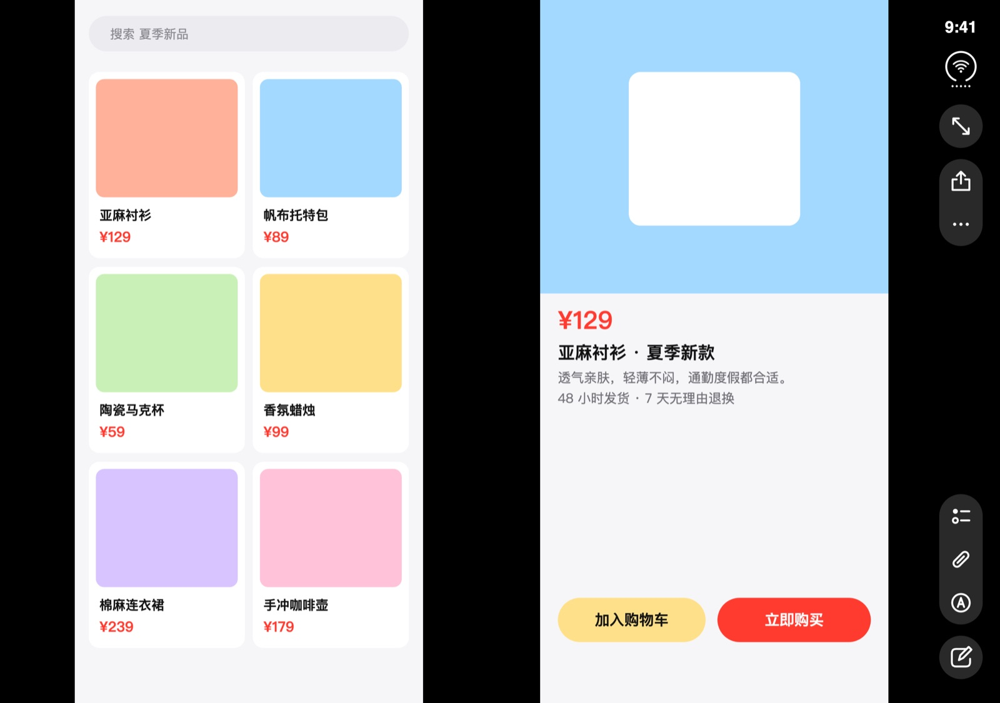

上传两张截图，立刻变成 iPhone Duo 内屏截图。
Fold your screenshot. Not your wallet.
图片只在本机处理，不会上传。 Images never leave your device.

↑ 示例效果。传你的截图，这里就变成你的。
使用指南
- 截取同一 APP 的两张截图，比如第一张是淘宝的首页，第二张是淘宝的详情页。
- 上传两张截图到本网站，生成 iPhone Duo 的截图。
- 发布朋友圈或你喜欢的 SNS，可参考以下文案：
- 什么垃圾适配？我看苹果要完蛋了
- 现在的 iPhone Duo 就像刚交房的毛坯大平层，除了大，连地砖都没铺全。
- 合上是高科技，展开是半成品，高端硬件与糊弄软件的史诗级碰撞。
- 外表科技未来，一开微信梦回 iPhone 4 时代。
- 展开后可视面积比小屏机还小，买了个随身黑边展示器。
或发给您的 AI 自由发挥。
反使用指南
本站生成假截图时间统一为9:41